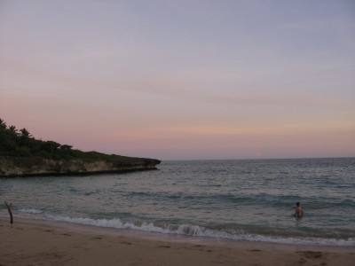
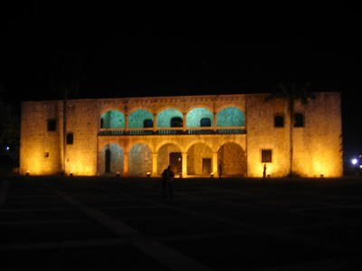
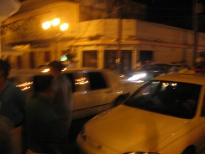
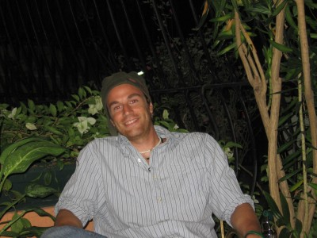

December 16th, 2007-Life has slowed down in the past two weeks since my last trip to the border. When you live in a big city, especially in the United States, time flies. In the Caribbean, time goes by at tortoise-like speed. For those who have only lived in cities and don’t know what its like to live in a slower paced environment, I encourage you to try it one day. It really makes you wonder what you were doing living in a place where life is flying by so quickly? We’re here for such a damn short period of time, why spend your days in a place where it feels even shorter?I told myself this entry wouldn’t contain a mini-lecture but I blew it in the first paragraph. I can’t wait for the granddaddy lecture that accompanies every last entry of every trip. I bet you all can’t wait as well. Thank me later.The last place we went to was San Pedro de Macoris. It is a relatively small town on the eastern portion of the island. To baseball enthusiasts you might better know this city by its nickname, “The Cradle of Shortstops.” Now if that ain’t a sweet nickname for a city, I challenge you to find a better one and e-mail me. “The D” “The Windy City” “The Big Apple” come on man. pleaaaase.This city produces more Major League baseball players per capita than any city in the entire world. Here’s a few players that come from this one town…Robinson Cano, Luis Castillo, Tony Fernandez, Jose Offerman, Fernando Tatis, Alfonso Soriano, and the man himself, Sammy Sosa. There are streets named after Sosa along with baseball diamonds, baseball teams, and dogs. (I’m pretty sure at least four stray dogs were named ‘Sam’, ‘Sammy’, or ‘Sosa’ by local kids)We spent some time in San Pedro meeting with a man who is running eight medical clinics that the NGO is bringing down in January. After San Pedro, we left and were driving back to the capital when we passed by a beach. Being Backpacker Acker, I can’t pass by a beach and not at least ask to stop. Ten minutes later we are at the beach in the water, playing frisbee, and lovin life.Last weekend we went to the Colonial Zone of the city. Santo Domingo is the oldest “New City” that was built by the Spanish when they came and wreaked havoc on the island’s indigenous. As you can guess, all the indigenous have been completely wiped out, but if you would like to do research about them, they were called “Taino.” In fact, some of their artwork is pretty cool stuff, check it out if you’ve got time on your hands (which every single one of you do if you are checking this site)The colonial zone has Columbus’ fort that he built when he came to Hispaniola along with a house that he spent time and his son eventually lived in. Suffice it to say, the house/palace overlooks the ocean and is in an ideal spot of town. Here’s a shot of it…While we were dinkin around, (notice that it’s dinkin…not drinkin….in this word, the ‘r’ makes a big difference, tune in next week when the ‘r’ in dinkin will be added and stories are bound to ensue. BUY STOCK IN MOJITO MIX NOW. uhhh, not sure how that statement got in there…back to the story…a white limo with five or six police escorts pulled up and led a contingent of people into the oldest church in the Western Hemisphere. Turns out Julio Lugo, a Dominican baseball player for the Boston Red Sox, was getting married that night.My buddy Greg, an avid Yankees fan, pointed out that he has been arrested for beating on his first and second wives. It’s funny how Greg, a Yankee fan, knew the downfalls of every single Red Sox player and could tell them to you in a matter of seconds. We thought about yelling smart-ass things at his posse…you know things like…”He’s a great hitter!” but figured he might have changed his ways and might have straightened out…it was either that or the 8 body builders in his posse who kept eyeballing us.My previous short post let you all know that Tropical Storm Olga hit us last week. It rained non-stop for two straight days, hardly ever letting up one bit. Greg and I spent most of the time pouring buckets of water from the driveway so it wouldn’t back up in to the house. The government of the Dominican Republic failed its people with Tropical Storm Noel because of a lack of preparation. For Olga, the government released water from a dam without telling the surrounding communities of the release. As a result, over 35 people died with others missing and an investigation has been opened. If you’d like to follow what’s going on in the D.R. go to this website for updates.Two nights ago I went to a concert that was held in a small movie theatre. It was an opening for a relatively small singer, scratch that, she was big in stature, but not so popular I should say. She reminded me of Aretha Franklin, only with out a voice. This theatre was great because it was so third-worldish it provided a lot of unintentional comedy. They surprised me at one point when the announcer said in Spanish that they had prepared a movie with random baby pictures of the star of the show. Slowly and smoothly, the screen was lowered from the ceiling and I nearly jumped out of my seat. I was blown away by the fact this was the most dilapidated movie theatre I’ve ever been but they are lowering a giant screen automatically from the ceiling.Wellllll…giant screen yes, automatically…very much no. I found this out after the movie ended and the M.C. walked back on the stage and very slowly the screen started to move up back into the ceiling…for about 2 seconds when it would then start drooping back down onto the MC’s head as he talked. Up 6 feet, down 3 feet. It was evident that this was not an automatic screen. In fact, I could see the little Dominican guy with a rope suspended above the screen via a pulley desperately trying to pull this massive screen up. Every time he would finally get a good grip with the rope and give it a heave, his feet would slip and he’d drop it again. He would tie the rope around his arm, march away from the audience’s view as the screen went up slightly, then as the screen would begin to lower again, he’d come back into view with his feet sliding along the floor. The screen out-weighed him by a good 200 lbs and I swear I was the only one in the theatre who found this turn of events funny.A random picture of me, because there aren’t many on this site. Don’t I look stressed?A few random stories before I leave you…-Went to a Batey on the eastern part of the island. Bateys, for those just joining, are towns built by Sugar Cane companies to house Haitian sugar cane workers. There were five of us, myself, and four old Dominican men who spoke no English whatsoever. We were sitting on buckets in a circle drinking coffee overlooking the mountains to the West, the ocean to the South, and a beautiful sunset to accompany the two. One of those true moments where you sit there and think, “how the hell did I end up here?” and “so this is why I travel.”The men were telling me in Spanish about how they have cows, pigs, horses and five street dogs that guard the animals. I tried to see if any of the men knew English but they only knew Creole, French, and Spanish. (only) The stray dogs were wandering around the house when two of the male dogs started wrestling with each other. Wrestling turned into playful fighting which then turned into…well I’ll stop there for the kids who may have accidentally wandered on the site. Regardless, the two male dogs were a bit confused as to how a female is supposed to be involved. One of the Dominican men leaned back on his pale, put his hand on his head, pointed at the dogs and yelled “It’s gay!” followed by all five men, myself included, laughing so hard we almost fell off our buckets. I guess he did know some English after all.-The woman who lives in the house offered me coffee, which I do not drink normally, but this coffee was amazing. After coffee, she offered me some type of chocolate-milk drink. Now anyone who knows me, knows that I love chocolate milk, and have even flirted with the idea of creating a magazine whose sole focus is to rate chocolate milk around the world. Call me crazy, but there isn’t a magazine that does this yet! Anyway, she went into the shack next to the house poured this chocolaty milk into a glass and gave it to me. Now, the shack should have been the first clue not to drink this milk. I tasted it, and to my surprise, it tasted decent, albeit, a bit sour. Halfway through my glass, a man returns with a cow and walks to the back of the house. The woman points to me and says “you drinking her milk.” The third world is sweet like that.Tomorrow I head off to a new country. Of which, I don’t feel 100% comfortable giving the details about but I will be a part of history and learn much more in the next two weeks then I have ever learned from any Latin American history text. Those who know me, know where I will be, what I will be doing. Those who don’t know me can only wonder I suppose. Rest assured, I will be safe and won’t be starting any revolutions, because quite frankly, it’s been done before.Ernesto “Che” Guevara remarked, “What do we leave behind when we cross each frontier? Each moment seems split in two; melancholy for what was left behind and the excitement of entering a new land.”I’m grateful for the past seven weeks I have had with my Dominican family. They are some of the kindest, most caring people I have ever met. They have treated me like a son and a brother, and that’s all I could have hoped for. I am very excited for my second journey tomorrow, even if it is only two weeks, I hope to accomplish in two weeks what most people hope to accomplish in years. I am certain this trip will have a jarring impact on how I view governments and the struggle of its citizens, and the revolutions that ultimately lead to the formers demise. As always, I thank you all for reading and hope that you all, one day, may experience this feeling of freedom and passion that has engulfed me each and every time I set foot in a new, exotic, unfamiliar place.Now if you’ll excuse me, I’ve got another country to explore…Backpacker Acker

|
You are using an insecure version of your web browser. Please update your browser!
Using an outdated browser makes your computer unsafe. For a safer, faster, more enjoyable user experience, please update your browser today or try a newer browser.
|
{kind=link}
{kind=link}
{kind=link}
{kind=link}
Found this while Googling info on Dominican baseball players. I wanted to let you know that your buddy was misinformed about Julio Lugo’s past, as the wedding party that you stumbled upon was that of his SECOND marriage. He did run into legal trouble in 2003 following a dispute with his first wife, but was later acquitted of all charges. It is telling that he and his new wife are raising the child born from his first marriage. I’m glad that you and your friend concluded that Lugo has changed his ways — I have done a lot of reading on the subject and believe that your conclusion was correct.
I enjoyed happening upon this page and will probably be back to read more about your Latin American explorations. Latin America is something that has piqued my interest recently, thanks to a renewed interest in baseball. In particular, I would love to visit the DR someday.
Best of luck with your travels!
One more comment about Julio Lugo: You may be interested to know that within a week of the conclusion of the World Series, he was en route to the DR to help assess hurricane relief needs, particularly in Barahona, where he spent his childhood. He and the Red Sox were also planning to match funds donated to the Red Cross (I’m assuming in the Boston area, not sure of the details).
I have to apologize for my misinformation, that’s what you get for believing a Yankees fan.
In addition, all of our relief work has been done in the Barahona area through out different Bateys in the region. I haven’t heard of any efforts of Lugo there but that does not mean he hasn’t done quite a bit for that region that I just haven’t heard of. I will check into the subject with a few sources in Barahona and will report. Thanks for the comments and support on the site.
Yo!
Just got home from the Carib. weather was perfect.
you should go to Puerto Rico.
Fucking cool place!
See you soon
Oh yeah happy new year!